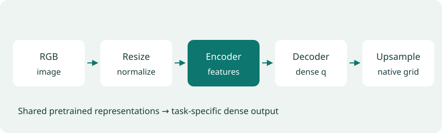
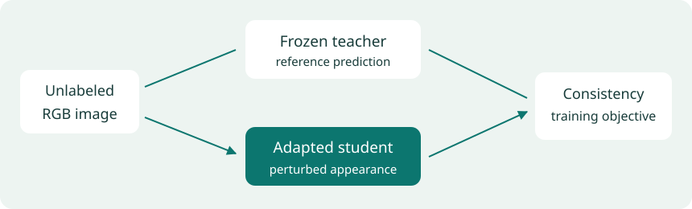
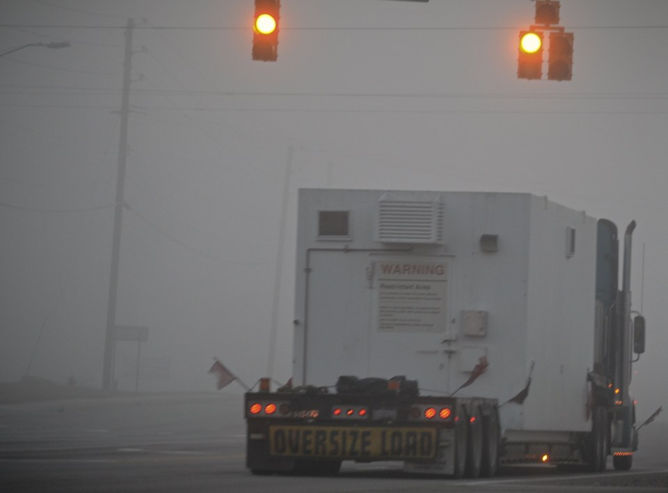

Guide 3 of 6 · 5 min
How the models learn depth
Image features, decoders, and adaptation
Page narration: listen, read, or record
Page audio is pending.
The model names can make this sound complicated, so start with the three questions in the table. V2 uses pretrained image features and learns depth from a teacher's labels. AC adapts a V2 model to preserve its predictions when appearance changes. DA3 takes a different approach to geometry, and I tested its Small checkpoint with one image. Look at the traffic photo before and after dimming, then reveal the saved results. The scene hasn't moved, so a changed near/far answer matters. Consistency still isn't proof of accuracy. The reference labels let us check that separately. I used these checkpoints; I didn't fine-tune them myself.
Download scriptRecord your own narration
Use the script above as a guide. Press Record to enable the microphone. Audio stays on your device.
Press Record when ready.
Download before leaving this page. Add the clip to the narration folder to publish it. Recording guide
The mirror showed a disagreement. Now we'll ask how the models learned to make those predictions, and what happens when the photo changes.
The three models I tested
| Model | Idea to follow | Question in this study |
|---|---|---|
| V2 Small | A pretrained image encoder and depth teacher help train a student. | How well does its near/far ordering hold up? |
| AC Small | A V2 model is adapted to preserve predictions through appearance changes. | Does the adapted checkpoint retain correct answers under dimming and blur? |
| DA3 Small | A geometry model designed for one or several views; tested here with one image. | Where does its answer differ from V2 and AC? |
I used released pretrained checkpoints. AC's authors performed its adaptation; I did not train or fine-tune these models.
What does “foundation model” mean here?
A foundation model learns reusable representations from broad training data. Depth training then gives those representations a specific job. V2 uses DINOv2 image features; Marigold adapts a pretrained image-generation model. Fine-tuning changes learned weights for the new task. Running an existing checkpoint is inference.
From image features to depth
DPT uses transformer features for dense prediction, reassembling them into spatial maps and combining several resolutions [3]. In the V2 implementation, the decoder predicts relative inverse depth, then interpolation returns the output to the photograph's grid.

How CNNs, transformers, and attention gather image context
From coarse-to-fine CNNs to transformers
Eigen's system first estimates the overall layout, then refines the result locally [2]. DPT combines transformer features at different resolutions [3]. Both need enough context to recognize a room and enough detail to preserve a chair leg.
| Design question | Coarse-to-fine CNN | Transformer with depth decoder |
|---|---|---|
| How is context gathered? | Convolutions build local features; the coarse network adds global context. | Attention mixes patch features across the image. |
| How is detail recovered? | A refinement network improves the coarse prediction. | Features are reassembled and fused at multiple resolutions. |
| What must still be learned? | Appearance cues that help predict scene geometry. | Which pretrained features and relationships help predict geometry. |
Architecture is only one part of the comparison. Training data, supervision, decoder design, and image resolution also affect the result.
How attention gathers context
A vision transformer represents image patches as feature vectors. Self-attention forms queries Q, keys K, and values V, then computes softmax(QKᵀ/√d)V, where d is the key-vector dimension. Query/key similarity determines how the value vectors are mixed.
A patch around a chair can therefore draw on features elsewhere in the room. The decoder combines those features across resolutions and predicts a value at each output location. Attention weights describe feature mixing, not physical distances; enlarging the final map cannot recover detail already lost inside the network.
V2: learning depth from a teacher
Depth Anything V2 trains a DINOv2-based teacher with synthetic depth, then uses it to label real photographs. Students learn from those pseudo-labels [4]. This brings precise synthetic supervision together with the wider range of appearances in real images.
The labels are generated by a model, so students can inherit its mistakes. The Small checkpoint used here predicts relative inverse depth; separately trained metric checkpoints serve applications that need meters.
Other foundation-model approaches: diffusion and metric depth
Marigold: adapting a diffusion model
Marigold starts with Stable Diffusion, keeps the latent representation, and fine-tunes the denoising network for image-conditioned depth [5]. Its original output is affine-invariant depth.
V2 and Marigold illustrate two uses of foundation models: transferring pretrained visual features into a depth predictor, and adapting an image-generation model to generate depth. The starting knowledge is broad; the depth objective teaches it a new job.
When the output needs to be in meters
Metric3Dv2 handles camera intrinsics through canonical camera-space transformations and estimates depth with surface normals [6]. Depth Pro uses a multiscale transformer and includes focal-length estimation [7].
For either approach, camera handling matters. Is the focal length supplied or estimated? Have cropping and resizing changed the intrinsics? These choices affect whether a prediction can be compared with a sensor's measurements.
AC: keeping geometry through appearance changes
DepthAnything-AC adapts a pretrained depth model using unlabeled images. A student learns to stay consistent under appearance changes, guided by a frozen model and a patch-level spatial constraint [8].

V2 Small and AC Small share the native V2 architecture and preprocessing here, making them the closest adaptation comparison. A teacher supplies training targets; a student learns to predict them. In AC, a frozen model helps restrain the student while its predictions are compared across changed appearances.
Example 2 · appearance changes
The scene stays put. Does the answer?
Strong digital dimming hides much of the photograph. The geometry and the marked coordinates stay the same. Look at A and B, then predict whether each model will keep its answer.

Photo: DA-2K [1] · images/adverse_style/11982103425_986b51e396_k.jpg. Dimming is digital postprocessing, not another camera exposure.
Reveal what changed
| Model | Original | Strong dimming | Dimmed pair 2 |
|---|---|---|---|
| Depth Anything V2 Small | 3/3 | 1/3 | B |
| DepthAnything-AC Small | 3/3 | 3/3 | A |
| Depth Anything 3 Small | 3/3 | 3/3 | A |
All three models start at 3/3. With strong dimming, V2 reverses two pairs and falls to 1/3. AC and DA3 retain 3/3. On the marked pair, the annotation says A is closer; dimmed V2 chooses B.
AC is trained to keep predictions consistent through appearance changes. This example makes that goal concrete, but comparing released checkpoints cannot identify which part of training caused the difference. DA3 also succeeds here, despite its lower aggregate score.
Compare the original and dimmed predictions →Consistency needs a correctness check
Suppose a model gives the same near/far answer in both photos. What does that tell us?
The answer is stable. It could also be wrong in both photos. Compare it with a reference before calling it accurate. This is the distinction behind the consistency discussion below.
Inside AC's training objective
AC combines consistency between weakly and strongly perturbed views, distillation toward the frozen anchor on the weak view, and agreement with the anchor's patch relations. Scale and shift normalization lets the loss compare relative predictions [8].
The patch relation combines normalized image-plane separation Sp with predicted disparity separation Sd: SD = √(Sp² + Sd²). The spatial loss compares the student's matrix with the anchor's. These are relative training coordinates, not measured 3D distances in meters. Equations 1–9 and the training code give the full objective.
If both views put a chair behind the wall, they can agree and still be wrong. The frozen anchor restrains changes, but supplies no new sensor measurement to correct a shared mistake. That is why the evaluation checks annotated ordering as well as prediction stability.
DA3: a different geometry model
Depth Anything 3 studies any-view geometry using a transformer and a joint depth/ray representation [9]. Here I ran the DA3-Small any-view checkpoint with one image. Its separate large monocular and metric variants were not tested.
Recent work on smaller models: DepthART
DepthART studies distillation into a tiny model and camera-specific adaptation [10]. This 2026 paper adds an efficiency question: how much depth quality can a smaller model retain on a particular camera?
Marigold, Metric3Dv2, Depth Pro, and DepthART are part of the paper review. Their results are not included in my three-model experiment.
What a depth loss rewards
Try the three-point example below. The reference is [1, 2, 3]. Change the student's scale and offset, then move only the third point. For the normalized error, each array has its mean subtracted and is divided by its mean absolute deviation before computing mean absolute error. This is a small illustration of normalization, not the complete AC loss.
Student: · Raw error: · Normalized error:
A prediction may get the scene shape right while using a different scale from its target. Direct squared error penalizes that scale difference. A simplified affine-invariant objective first fits scale and shift: minₐ,ᵦ mean((a q + b − q*)²). A positive scale preserves near/far direction.
A gradient term can penalize mismatched boundaries. A consistency term compares predictions after an appearance change. Actual training losses add their own masks, normalization, weights, and constraints; the simplified expressions here explain what each term is trying to preserve.
Planning a fine-tuning experiment and choosing an approach
How I would test fine-tuning
A training experiment would keep separate training, validation, and test images, plus an untouched pretrained baseline. Validation would determine when to stop. Tests on difficult inputs and clean scenes would reveal both improvements and losses.
Comparing two released checkpoints cannot isolate one loss term. To test the consistency or spatial constraint, I would hold the rest of training fixed and vary that component.
| Task | Approach to investigate | Main evaluation question |
|---|---|---|
| Near/far layout | V2 relative-depth student | Does it preserve ordering and boundaries in the target scenes? |
| Generative depth prediction | Marigold | How do the output convention and sampling setup affect the result? |
| Distances in meters | Metric3Dv2 or Depth Pro | How accurate are distances for the target camera? |
| Appearance robustness | AC adaptation | Does adaptation improve difficult inputs while retaining clean performance? |
| Several views | DA3 family | Which variant and camera/view setup match the task? |
| Limited device resources | Compression methods such as DepthART | What accuracy, memory use, and latency occur on the actual device? |